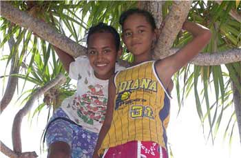
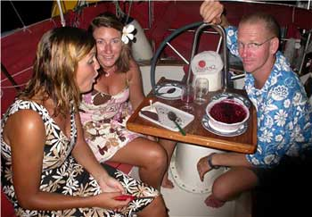
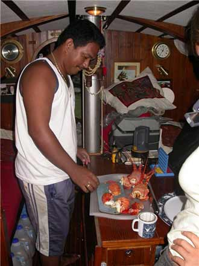
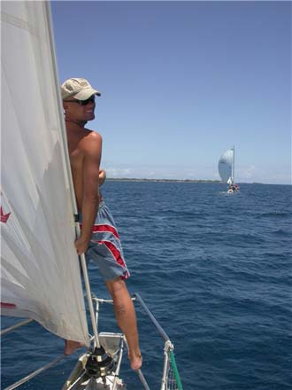

Vi tar dei på ordet. Dei fleste båtar vi møter, reiser til dei sørlege Cooks øyene. Ok, då får vi reise nordover. Det er langt å segle – men absolutt utanfor allfarveg. Penrhyn er målet.

På øya Penrhyn, Tongareva blant dei lokale, bur det 300 mennesker fordelt på to landsbyar. Dei lever stort sett av fiske, og ellers det naturen kan gje dei. Den største inntekstskjelda til folket på øya, er fletta hattar og vifter. Det er ein omstendeleg prosess. Først skal dei ta blada av planteskot, rive dei i strimlar, koke og tørke dei – for deretter å flette dei saman til flotte hattar med innfletta oystersskjell og nydelege detaljar.Aldri har vi vel fått ein slik hjarteleg velkomst som på denne øya. Imigrasjonsmyndigheitene stig om bord i skuta, barbeint og i blomstrete skjorte. Etter å ha kikka i passa våre, er dei langt meir interessert i ein kopp kaffi og omvisning enn papirarbeid. Slik går den føremiddagen – noko som er byrjinga på ein periode der KaffeLars aldri rekk å nå vanleg romtemperatur att…
I landsbyen Omoka er vi ei veke. Vi blir godt kjent med den katolske presten Alex, og dei ti ungane hans. Katolikkar nyttar som kjent ikkje familieplanlegging, noko presten var fortvilt over no som kona venta born nummer 11 – i ein alder av berre 36 år. Alex fungerar som landsbyen sin prest, bakar, fysioterapeut, elektrikar, tømrar og jordmor… På en stad som Penrhyn må ein mann gjere det ein mann må gjere. Då Alex får høyre at eg har bursdag, inviterer han oss straks til å feire dagen i hagen hans.

Først diskar Frode opp med deilig lammelår i båten. Til dessert er det ostekake, og sjokoladekake som ei dame i nabobåten kjem over med. Dette er ikkje kvardagskost for ein seglar, og lite vert sagt gjennom måltidet utanom ..mmmm…ah.. Etter herremåltidet reiser vi inn til Alex. Han stiller med meir mat og ungane underheld. Ti ungar i alderen 2 til 20 år spelar ukulele og gitar, syng klokkereint og fleirstemt. Det er som Stillehavet sin vri på ”Sound of music”, der alpane er bytta ut med kvite strender. Det blir ein god bursdag.Det byrjar å blåse opp og vi bestemmer oss for å flytte over til den andre sida av lagunen for å få betre skydd mot vind og bølger. Det er kveld før vi kjem fram, og vi kryp til køys. Neste morgon bestemmer vi oss for å spasere rundt den vesle øya – det skulle vise seg å verte vanskeleg. Vi har ikkje vore i land i meir enn omlag eit og eit halvt minutt før første familien inviterer oss inn til seg. Vi får ei stor koksnøtt kvar, og familien sit rundt oss og kikkar forventningsfullt på oss. Vi tømmer i oss, men koksnøtta verkar utømmeleg. Familien smilar og vi drikk. Noko vi har lagt merke til fleire gongar, er at mange av desse folka ikkje er så opptekne av å preike. Det verkar som om at det viktigaste er å vere saman og nyte god drikke…
Frode og eg gjer ein beundringsverdig innsats med kokosnøtene. Vi takkar for oss og går. Det er nærast som vi kan høyre kor kokossafta skvulpar i magen i det vi spaserer nedover vegen. ”Hello!”, høyrer vi snart, og ei hand vinkar oss inn i eit bitte lite hus. ”Vil de ha noko å drikke kanskje…?” Slik går den første dagen i landsbyen TeTauTua. Øya får vi aldri sjå…
Folka her er kjende for å vere ivrige med byttehandel. Valutaen i den vesle landsbyen er noko utanom det vanlege. Dei har ikkje mange pengar å rutte med, men dei har svarte perler, naturlege pipi-perler, skjellsmykker, hattar og vifter. Tannlause Zeitho er veldig nøgd då han får bytta til seg ein elektrisk tannbørste. Gamle Papa får seg regntøy frå Helly Hansen (medan han klagar over for lite nedbør). Slik fortset det. Vi får snart høyre at det er staus i den vesle landsbyen å ha bytta til seg noko frå oss. Det er tydeleg at det ikkje er så viktig kva dei får. Det er sjølve handelen dei er opptatt av. Snart kjenner vi at det vert reint for mykje, og seier at vi har gått tom for saker å bytte bort. Men folka er like glad. Perler kan vi få lell.

Vi får mange gode vener i TeTauTua. Tomakko, ein 26 år gamal kar som er kjent for å vere den beste Cray-fiskaren (Cray-fisk er ein type hummar utan klør) i landsbyen, og vil gjerne ta oss med. Nokre timar etter at mørkret fell på, tar vi med oss lommelykt og reiser ut på revet. Tomakko bøyer hovudet og ber ei bøn før vi byrjar. Han ber Gud leie oss trygt over revet, og at han må vise oss kvar vi skal gå for å få Crayfisk. Det er nesten magisk. Det er stjerneklart, havet brusar på utsida av revet og lyset frå lommelykta treff småfisk som ligg i kulpar og ventar på høgvatn. Etter nokre timar, samlast vi for å gjere opp reknskap. Det er enkelt. Marit –null, Frode – ein liten fisk, Darren – null og Tomakko – tre normale Crayfish –og eit monster. No bærer det rett tilbake i båten. Fangsten skal i gryta. Tomakko visar oss korleis maten skal kokast, og korleis Crayfisken skal reinsast. Han treng ikkje vise oss korleis den skal etast, noko vi klarar heilt fint. Halv fire når vi puta –mette og nøgde.Ein annan kar vi blir godt kjent med, er Kollo. Han seier lite, men er ein handlingens mann. Han tar Frode med for å dykke etter pipi-perler, med god fangst. Petrell er snart full av ivrige hjelparar når skjella skal opnast. Når alle skjella er opna, sit vi att med tre bitte små perler og ei stor perle som mange vil beundre. Ein morgon kjem Kollo ut i båten med ei flaske isvatn og nysteikte pannekaker. Han veit at vi ikkje har kjøl om bord, og pannekaker kan kanskje vere godt til lunsj? Då vi reiser tilbake til den første landsbyen Omoka, blir Kollo med om bord. Vi utstyrer han med raud cap og gule solbriller. Han er tøffare enn toget og ein glad mann.
Vi blir veldig inkludert i dagleglivet i den vesle landsbyen. Om kveldane møtast vi gjerne over ein kopp kaffi, syng, spelar ukulele og gitar. Vi blir invitert til å ete lunsj på sundagsskulen, som er landsbyen sitt samlingspunkt. Sundagen før vi reiser, går vi i kyrkja. Eg får låne ein stråhatt så eg er skikkeleg kledd. Presten legg inn ei lita helsing til oss på engelsk i preika

si. Han takkar for at vi kom til TeTauTua, og håpar at vi vil fortelle verda der ute at det finnast ei lita øy som heiter Penhryn.Det er to vemodige, men glade, seglarar som forlet Penrhyn. Vemodige fordi vi må forlate mennesker vi bryr oss om. Glade for at vi fekk oppleve at det framleis finnast uberørte stader, der TV og internett ikkje har satt sine spor – enno.
Etter over to veker på på Penrhyn, gjer vi oss klare for 860 sjømil - vi skal til Samoa og storbyliv.
hilsen Frode og Marit
{kind=link}
{kind=link}
{kind=link}
{kind=link}
{kind=link}
{kind=link}
{kind=link}
{kind=link}
{kind=link}
{kind=link}